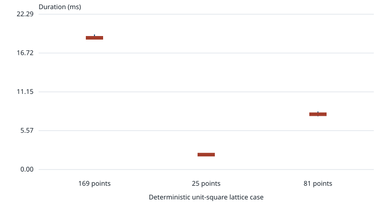

Versioned result record opt05-hull-20261012-d1c211c2, measured against source commit d1c211c2763989a9cf3e39a8acaf609c5cf33a07. This is a single-adapter descriptive report, not a comparison or speedup claim.
All measured trials matched the independent fixture checks. A complete result means all candidates received correctly bound LP outcomes and removal witnesses passed binary64 tolerance checks. It does not establish exact or validated hull equality.

reduce_hull; fixture construction, LP registration, and workspace factory are outside the interval, while first-use HiGHS initialization inside the call is included.| Case | Points | Median (ms) | Range (ms) | Verified / runs | Failures | Median LP calls |
|---|---|---|---|---|---|---|
| grid-169 | 169 | 18.908 | 18.714–19.387 | 7/7 | 0 | 169 |
| grid-25 | 25 | 2.136 | 2.098–2.161 | 7/7 | 0 | 25 |
| grid-81 | 81 | 7.932 | 7.635–8.326 | 7/7 | 0 | 81 |
all points (x/(s-1), y/(s-1)) on row-major s-by-s lattice over [0,1]^2. The independent oracle checks the four expected square-corner IDs, all returned barycentric certificates against original coordinates, complete status, and that reducer-reported LP calls match the number of attempts. Assurances: binary64 numerical checks; not exact arithmetic or a validated global certificate
HiGHS 1.11.0 with simplex, presolve off, parallel off, and one configured native thread. Cases were run in interleaved order, with a fresh LP workspace for each trial. Policy: one warmup per case; seven measured repetitions per case; round-robin interleaved case order; fresh LP workspace per invocation
steady_clock duration of reduce_hull only; cloud creation, adapter registration and workspace factory excluded; first lazy HiGHS initialization inside the reducer call is included
No general runtime complexity or application-throughput claim follows from these three 2-D regular grids. They do not benchmark other simplex methods, geometry representations, conversions, or alternative hull reducers. The separate sampling profile is not included in the measured values.
OS: Windows-11-10.0.22631-SP0; CPU and memory/load snapshots and concurrent-work note are in records.json. Process exit: 0; raw attempts: 24 including 3 warmups.
Generated only from saved records. Rendering does not invoke the reducer or solver.